Real Redis, real concurrency. The diagram follows one dispatch cycle from queue-depth read through adaptive worker sizing to the per-job success/retry/DLQ branch, plus the separate DLQ-replay flow.

| Node | Location | What it does |
|---|---|---|
| WORKERCALC | worker_pool.py:desired_worker_count() | max(MIN, min(MAX, depth // SCALE_DIVISOR + 1)) — a simple formula, but it's what makes worker count respond to observed load rather than running a fixed pool sized for peak. |
| EMPTYCHECK / IDLESTOP | worker_pool.py:run_dispatch_loop() | The dispatch loop doesn't run forever — after idle_stop_after (2) consecutive empty cycles, it stops. This is what lets the demo scripts terminate cleanly instead of polling an empty queue forever. |
| TRY / MAXCHECK | worker_pool.py:handle_one() | Every job failure increments a Redis-backed attempt counter (INFLIGHT_HASH) — this survives across dispatch cycles and even worker restarts, unlike an in-memory counter would. |
| TODLQ vs. REENQUEUE | worker_pool.py:handle_one() | The exact same failure either gets one more chance (re-enqueued for a later cycle) or gets permanently routed to the DLQ — the only difference is whether attempts >= MAX_ATTEMPTS. |
Every enqueue() call returns in under a millisecond regardless of how deep the (never-drained) queue gets — proving the producer never waits on the consumer.
Depth jumps from 5 to 1035 across cycles; the dispatcher spins up 8 workers for the deep cycle, then scales back to 2 workers once the queue drains to 35 — all driven by the same formula.
CYCLE(depth=1035) → WORKERCALC(8) → CYCLE(depth=35) → WORKERCALC(2)Fails attempt 1 → re-enqueued. Fails attempt 2 → re-enqueued again. Fails attempt 3 → MAX_ATTEMPTS reached → routed to DLQ, attempt counter cleared.
TRY(fail) → INCATTEMPT(1) → REENQUEUE → TRY(fail) → INCATTEMPT(2) → REENQUEUE → TRY(fail) → INCATTEMPT(3) → MAXCHECK(True) → TODLQreplay_dlq() moves poisoned jobs back onto the main queue for another attempt — since they're genuinely unrecoverable, they land back in the DLQ again, proving replay retries rather than magically fixing anything.
max(MIN, min(MAX, depth // SCALE_DIVISOR + 1)).A pure function of instantaneous depth has no memory — if load oscillates faster than one dispatch cycle, the formula will thrash between low and high worker counts, paying the overhead of spinning workers up and down repeatedly without ever settling. I'd add a smoothing term — an exponential moving average of recent depth readings feeding the formula instead of raw instantaneous depth — or a hysteresis band (don't scale down until depth has been low for N consecutive cycles) to damp oscillation, which is the same problem Kubernetes HPA solves with its stabilization window.
It proves the producer never blocks on consumer availability — the architectural property backpressure decoupling is meant to guarantee. It does not prove the system behaves well when the queue itself becomes the bottleneck — e.g. Redis memory pressure under a truly unbounded burst (millions of jobs, not 500), or what happens to producer latency once Redis itself is saturated. A real capacity test needs to push past the point where Redis, not the workers, becomes the constraint, and verify there's a real backpressure signal (queue-depth-based admission control, or Redis eviction/OOM behavior) rather than assuming the queue absorbs infinite load.
Each failure increments a Redis-backed attempt counter (INFLIGHT_HASH); once attempts >= MAX_ATTEMPTS, the job routes to the DLQ instead of being re-enqueued. Retrying forever is wrong for two reasons: a genuinely poisoned job (malformed payload, a bug that always throws) wastes worker capacity indefinitely, starving healthy jobs of processing time; and it hides a real bug from operators — nothing ever surfaces as 'this needs a human' because the system just keeps quietly trying. A bounded retry with a DLQ turns an invisible infinite failure into a visible, actionable one.
Single-Redis-instance queueing is the first thing to go — at 100x volume you need either Redis Cluster (sharded by job key) or a purpose-built queue (SQS, Kafka) with partition-level parallelism, because a single Redis instance has a hard ceiling on both memory and single-threaded command throughput. The worker-pool and DLQ logic largely stay conceptually the same — they'd just operate against a partitioned queue instead of one Redis list, with per-partition dispatch loops instead of one global one, to actually realize the parallelism the higher volume demands.
As described, the attempt counter itself is safe from lost updates as long as its increment is atomic (Redis HINCRBY is), but that only protects the counter — it doesn't by itself prevent two workers from both dequeuing and processing the same job if the queue pop isn't atomic with respect to visibility. Redis's LPOP (or a proper visibility-timeout pattern like RPOPLPUSH) needs to guarantee only one worker ever sees a given job at a time; if that guarantee holds, the attempt counter is trustworthy, but it's worth explicitly stating that the safety property here rests on the queue primitive, not the counter alone.